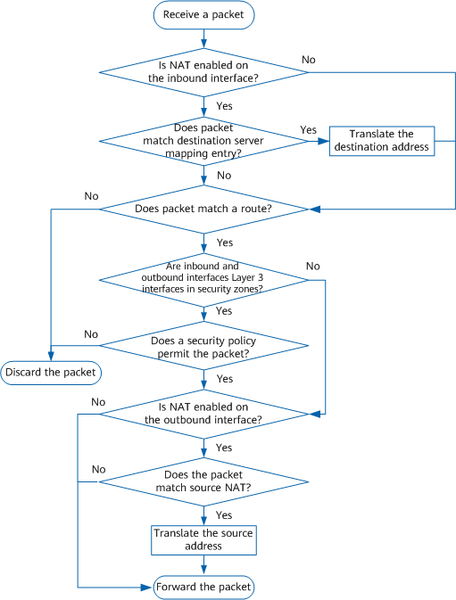

NAT Processing Flow
The device performs NAT translation for packets on an interface only when NAT is enabled on this interface. If NAT is enabled on the inbound or outbound interface of a packet, the device checks whether the packet matches a destination or source NAT rule, respectively. If so, the device translates the destination or source interface of the packet accordingly.
The NAT processing on the device is as follows:
Figure 1 NAT processing flow
- When receiving a packet, the device proceeds to step 2 if NAT is enabled on the inbound interface. Otherwise, the device proceeds to step 3.
- The device searches for a matching server mapping entry generated by NAT Server. If a match is found, the device translates the destination address of the packet accordingly and proceeds to step 3. If no match is found, the device proceeds to step 3.
- The device searches for a matching route for the packet. If a match is found, the device proceeds to step 4. If no match is found, the device discards the packet.
- If the inbound and outbound interfaces of the packet are Layer 3 interfaces that have been added to security zones, the device searches for a security policy matching the packet. If the security policy permits the packet, the device proceeds to step 5. If the security policy denies the packet, the device discards the packet. If both inbound and outbound interfaces of the packet are not Layer 3 interfaces in security zones, the device proceeds to step 5.
- If NAT is enabled on the outbound interface, the device proceeds to step 6. Otherwise, the device proceeds to step 7.
- If the packet matches a source NAT rule, the device translates the source address of the packet and proceeds to step 7. If the packet does not match any source NAT rule, the device directly proceeds to step 7.
- The device sends the packet out.
Destination NAT, route, security policy, and source NAT are processed in sequence. Therefore, the source address configured in a route or security policy is the pre-NAT source address, and the destination address configured in a route or security policy is the post-NAT destination address.